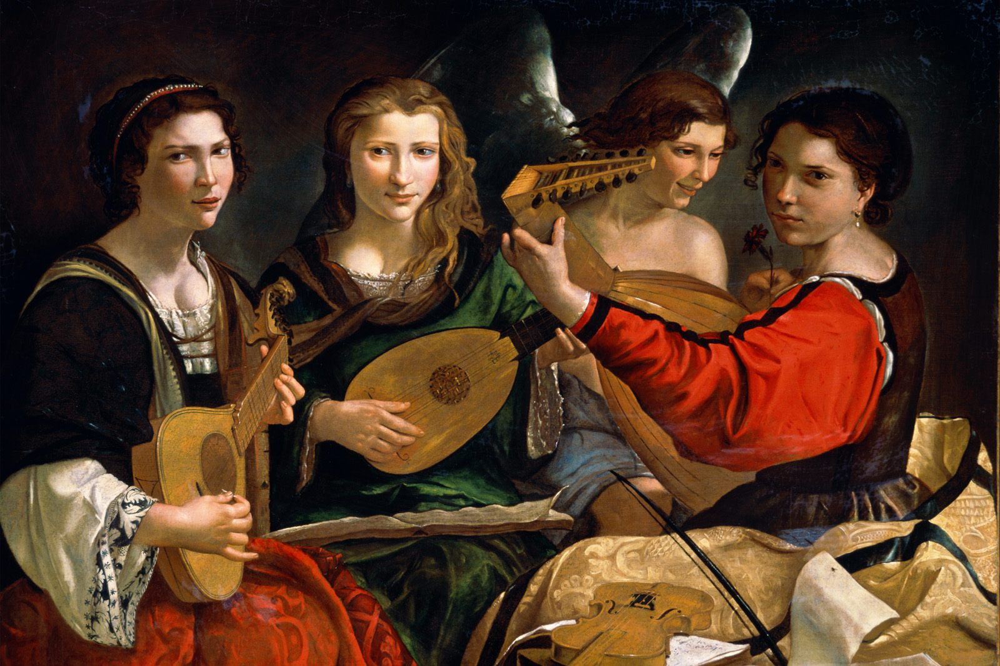

¡Las gran olvidadas!
5. LA MUJER EN EL BARROCO

Durante el Barroco, pese a las enormes dificultades sociales y a la oposición explícita de instituciones como la Iglesia, varias compositoras lograron abrirse paso y dejar una huella real en la historia de la música. La aparición de publicaciones periódicas que difundían partituras por toda Europa permitió que su obra circulara más allá de su entorno cercano. Estas mujeres compusieron en un tiempo marcado por la Inquisición, por epidemias devastadoras y por prejuicios tan fuertes como la prohibición papal que afirmaba que la música era “dañina para la modestia femenina”. Aun así, crearon música de enorme calidad y participaron activamente en la vida cultural de su época.
5.1. ¿Quiénes fueron y qué compusieron?
En Italia, Francesca Caccini trabajó en la corte de Florencia con el mejor sueldo de todos los músicos ducaless y se convirtió en la primera mujer conocida que escribió ópera. Su Liberazione di Ruggiero (1625) llegó incluso a representarse fuera de Italia. En la Venecia del siglo XVII, Barbara Strozzi publicó sus obras sin el apoyo de mecenas poderosos y sus partituras viajaron por toda Europa; Rosanna Scalfi, por su parte, escribió cantatas que se interpretaban en góndolas durante las noches de verano.
En Francia, Elisabeth Jacquet de La Guerre logró hacerse un hueco en la corte de Luis XIV y estrenó la primera ópera francesa compuesta por una mujer. Julie Pinel publicó una colección de arias muy valorados dentro de una revista musical de gran difusión.
En los territorios germánicos, Wilhemine von Bayreuth compuso ópera, música de cámara y obras instrumentales durante un periodo en el que también impulsó la construcción del célebre Teatro de la Ópera de Margrave.
En Inglaterra, Elisabeth Turner publicó canciones en la prestigiosa revista The Lady y trabajó como cantante en diversas ciudades.